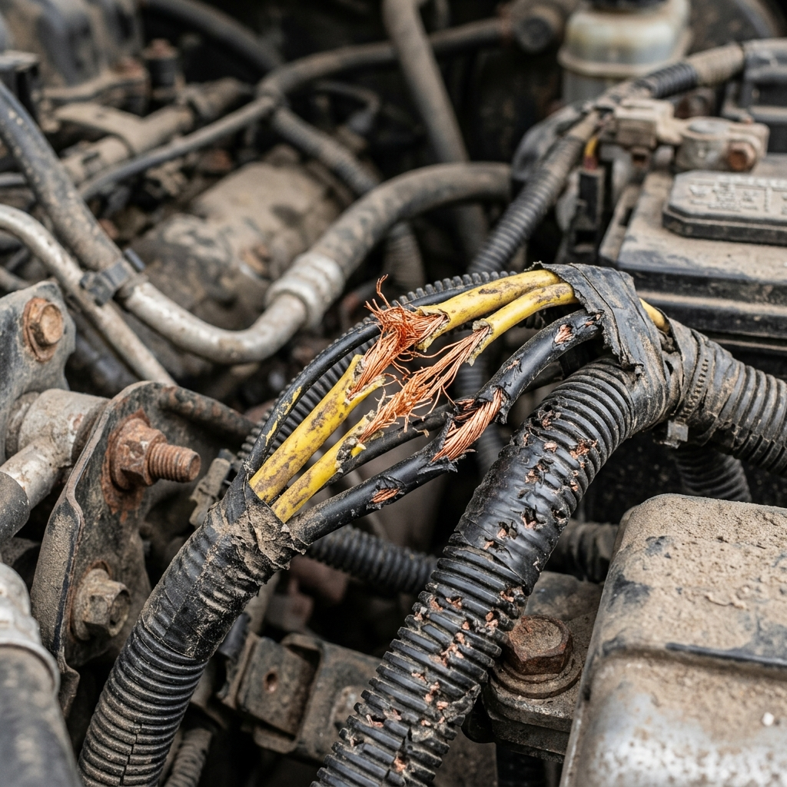
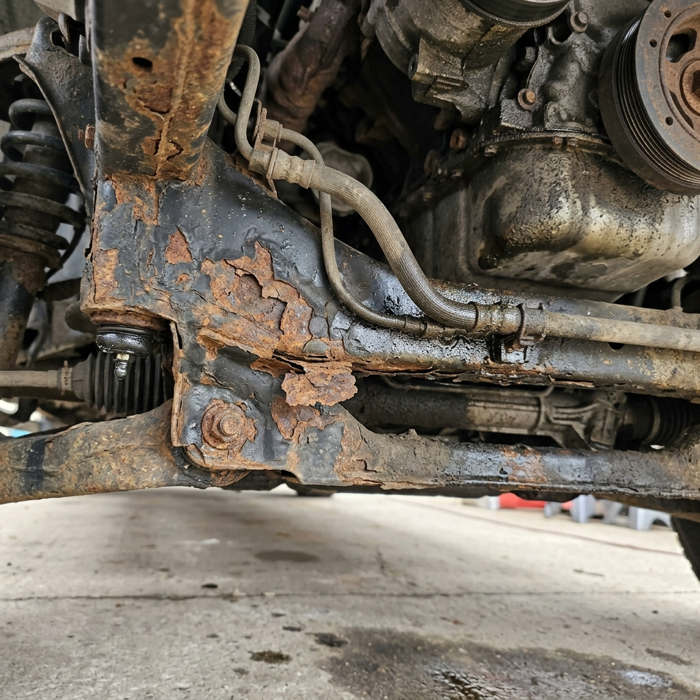

1. The Used Car Minefield: Why Aesthetic Shine Hides Mechanical Crises
The used car market is a minefield of asymmetric information. Sellers, particularly commercial used car dealers, possess complete knowledge of a vehicle's faults, history, and failures, while you, the buyer, are left to make a decision based on a clean exterior polish and a short drive around the block. In my career as an Automotive Quality and Customer Experience Professional, I have inspected thousands of vehicles, and the story remains consistent: aesthetic condition rarely reflects mechanical reality.
Unscrupulous sellers use detailing methods to mask severe mechanical wear. Steam cleaning the engine bay removes evidence of chronic oil or coolant leaks; heavy silicone sprays make old hoses look new; and thick chassis undercoating masks deep corrosion or weld repairs. A vehicle that looks like it just rolled off the showroom floor may actually have a worn engine block, a rolled-back odometer, a bent chassis, or a failing head gasket.
Without a structured Used Car Inspection Checklist and technical diagnostic equipment, buying a used car is a gamble. If you purchase a car and discover a major defect later, you will have to bear the cost of repairs. At CARROBAAR_Drive, we operate with a strict zero-conflict-of-interest policy, providing objective technical audits so you can buy with confidence.
Dealers routinely apply heavy petroleum-based dressers to the engine compartment and tire treads. While this creates a high-gloss look that mimics a new car, it serves a dual purpose: the shiny coating temporarily seals slow oil leaks around the valve cover gasket and masks tire dry-rot cracks. Always look past the shine and focus on the metallic castings, gaskets, and structural welds.
2. Paperwork & Legal Due Diligence: Verifying the Vehicle's Identity
A technical inspection is useless if the paperwork is not in order. Before you begin inspecting the mechanical components, you must verify the vehicle's documentation.
A. Registration Certificate (RC) Verification
Check the physical RC card or the digital record on the Vahan portal. Match the Chassis Number (VIN) and Engine Number stamped on the vehicle's structural frame (usually stamped on the floorboard under the driver's seat, on the engine firewall, or on the strut tower) with the RC details. A mismatch indicates a swapped engine or a stolen vehicle chassis.
Pay attention to the owner count. Every owner change reduces the vehicle's market value. If a car is listed as a single-owner vehicle, but the RC shows "Owner No: 3", the seller is misleading you. Additionally, look for the word "DUPLICATE" or "DUP" on the card. A duplicate RC is issued when the original is lost, but it is also used to sell cars with outstanding loans where the original RC is held by the financier.
B. Insurance History & No Claim Bonus (NCB)
Request the current comprehensive insurance policy document. Look for the No Claim Bonus (NCB) percentage. The NCB is a discount on the insurance premium that grows each year the owner does not make a claim.
- NCB of 35% to 50%: The owner has not made an insurance claim for 3 to 5 years, suggesting a history free of major accidents.
- NCB of 0%: The owner made a claim in the previous year. You must investigate what was repaired. Request the insurance company's claim history log or check the body panels for resprays and fillers.
C. Hypothecation Status (HP) & NOC
If the vehicle was purchased with a loan, the RC will show a hypothecation to the lending bank. Ensure that the seller provides a Bank No Objection Certificate (NOC) and two copies of Form 35 stamped by the bank. If these are missing, the RTO will not transfer ownership, and you could be held liable for the remaining loan balance.
| Document Type | Key Element to Inspect | Risk / Red Flag | Validation Method |
|---|---|---|---|
| Registration Certificate (RC) | Chassis (VIN) stamp, Owner number, duplicate tag | Swapped engine, outstanding loan, stolen vehicle, incorrect ownership trail | Match metal stamp under driver seat or firewall to RC card and Vahan app |
| Insurance Policy | No Claim Bonus (NCB) percentage | 0% NCB indicates recent major accident repairs and body shop work | Request policy premium breakdown page; query insurer for claim records |
| Service History Invoices | Dates, mileage progression, component changes | Gaps in timeline, sudden mileage drops, major transmission/engine work | Walk into authorized dealer workshop with the VIN to query national database |
| RTO Challan & Blacklist | Pending fines, theft records, court blacklisting | Inability to transfer registration, pending vehicle impoundment orders | Search registration number on E-Challan portal and Vahan registry |
3. Engine Blow-By Check: How to Expose Internal Engine Wear
Engine blow-by is a critical mechanical failure indicating worn piston rings, glazed cylinder walls, or internal engine wear. When blow-by occurs, the engine loses compression and burns oil, eventually requiring a complete engine rebuild or overhaul.
The Mechanics of Blow-By
During the combustion stroke, high-pressure gas is generated to force the piston down. The piston rings—consisting of compression, scraper, and oil rings—are designed to seal the gap between the piston and the cylinder wall. Over time, as an engine runs, friction wears down these rings. Dust bypass (due to a dirty air filter) can also score the cylinder walls.
When the seal fails, a portion of the high-pressure combustion gases leaks past the piston rings into the crankcase. The crankcase becomes pressurized with hot, oil-laden combustion vapor. While a healthy engine routes minor vapors back into the intake manifold via the Positive Crankcase Ventilation (PCV) valve, severe blow-by overwhelms the PCV system. This causes high pressure to build up in the oil sump.

Infographic 1: Piston Ring Failure & Crankcase Pressurization
A cross-sectional diagram illustrating how combustion gas escapes past worn piston rings into the crankcase, causing oil vapors to exit through the oil cap and dipstick.
Step-by-Step Diagnostic Check for Blow-By
- Bring Engine to Operating Temperature: Start the engine and let it run until the temperature gauge reaches the center (approx. 85°C to 95°C). Worn metal parts expand when hot, so diagnosing blow-by is most accurate at operating temperature.
- Conduct the Oil Filler Cap Test (The Rattle Test): With the engine idling, open the hood and unscrew the oil filler cap. Do not lift it off; instead, place it loosely back on the filler neck.
- Pass: The cap should sit still or vibrate slightly due to normal engine movement. No gas pressure should lift it.
- Fail: The cap is blown off the neck or dances violently. This indicates that excessive crankcase pressure is escaping.
- Inspect the Vapor Output: Look closely at the open filler neck. A light, faint steam that dissipates immediately is normal condensation. A steady stream of grey, blue, or dark smoke is a sign of oil burning inside the crankcase due to piston ring bypass.
- Conduct the Dipstick Test: Pull the oil dipstick out while the engine is running. Look for puffs of smoke coming out of the dipstick tube. Hold a clean white sheet of paper 2 inches above the open tube for 10 seconds. If the paper is sprayed with engine oil droplets, high pressure is forcing oil out of the sump.
- Evaluate Tailpipe Smoke: Ask an assistant to press the accelerator pedal up to 3,000 RPM.
- Blue smoke under load: Confirms worn piston rings or cylinder walls.
- Blue smoke on deceleration: Indicates worn valve guide seals drawing oil into the intake manifold under vacuum.
4. Odometer Rollback Detection: Checking ECU, TCU, and ABS Modules
Odometer tampering is a common fraud in the used car market. Unscrupulous sellers can alter an electronic odometer in under 10 minutes using diagnostic toolkits connected to the OBD2 port. By rolling a vehicle back from 1,20,000 km to 45,000 km, they can artificially increase its resale value.
A. Electronic Odometer Architecture
Modern odometers display mileage on a digital screen, but this value is stored in non-volatile memory (EEPROM) chips within the instrument cluster. Cheap handheld programming tools (such as Digiprog or Carprog) write new mileage values directly to this chip. However, manufacturers store mileage data in other control modules as well.
B. Comparison of Redundant Modules
In modern vehicles, mileage is recorded independently by several onboard computers:
- Transmission Control Unit (TCU): Records mileage during gear shifts, clutch engagements, and hydraulic solenoid operations.
- ABS/ESP Module: Computes mileage by counting wheel rotation sensor pulses.
- Body Control Module (BCM): Records mileage to manage service intervals and lighting features.
- Engine Control Unit (ECU): Logs engine operations and diagnostic fault occurrences.
Since updating all of these modules requires advanced, brand-specific diagnostic tools, most rollback services only update the instrument cluster display.
An inspector can connect an OBD2 scanner (such as an Autel Maxisys or Launch X431) to query these modules. If the instrument cluster reads 38,000 km but the TCU or ABS module has logged 96,000 km, the odometer has been tampered with.

Infographic 2: Redundant Module Odometer Comparison Map
Diagram showing how an OBD2 scanner communicates with the instrument cluster, ECU, TCU, and ABS modules to highlight mileage discrepancies.
C. Engine Running Hours Validation
If the seller has cleared the logs in the other modules, you can still check the Engine Running Hours. Query the ECU for the total hours the engine has run since leaving the factory. Calculate the average speed of the vehicle using the formula:
Let's look at how to interpret the results:
- Realistic Average Speed (25 km/h to 45 km/h): Normal for mixed city and highway driving. For example, 45,000 km divided by 1,500 hours equals an average speed of 30 km/h.
- Unrealistic Average Speed (under 10 km/h): Suggests a rollback. For example, if a car shows 15,000 km on the odometer but has 2,500 engine hours, its average speed would be 6 km/h. Unless the vehicle spent its entire life idling, the odometer has likely been rolled back while the engine hour log was ignored.
D. Physical Wear Indicators
If diagnostic tools are unavailable, check these physical wear indicators:
- Front Brake Rotors: Run your finger along the outer edge of the front brake discs. Rotors typically develop a lip (about 1.5mm deep) after 50,000 to 60,000 km of driving. If a car showing 20,000 km has a deep, sharp ridge on the rotor, its actual mileage is likely much higher.
- Pedal Rubbers & Gear Knobs: Inspect the rubber pads on the brake, clutch, and accelerator pedals. If the rubber is worn down to the bare metal, the vehicle has likely covered over 80,000 km. A steering wheel wrap that is worn smooth or a gear shifter with faded text also indicates high mileage.
- Tyre DOT Codes: Locate the 4-digit week/year stamp (e.g., "1222" means the 12th week of 2022) on the tyre sidewall. Tires usually last 40,000 to 50,000 km. If a car showing 20,000 km is fitted with a second set of tires (or tires with a date code newer than the vehicle's manufacture year), it suggests the original set wore out at 45,000 km, after which the odometer was rolled back.
5. Head Gasket & Cooling Audit: Identifying Internal Gasket Leaks
A blown head gasket is a serious engine defect that allows coolant and engine oil to mix, leading to overheating, cylinder head warping, and potential engine failure.
A. Head Gasket Function
The head gasket seals the connection between the cylinder block and the cylinder head. It maintains compression in the combustion chambers while keeping oil passages (operating at up to 60 PSI) and coolant passages (operating at up to 15 PSI) isolated from each other.
B. Identifying Oil-Coolant Emulsion
When the head gasket fails between adjacent oil and coolant passages, oil enters the coolant or coolant enters the oil sump. As the engine runs, the heat and moving parts whip the oil and coolant into a thick, light-brown emulsion that resembles mayonnaise.
- Check the Oil Cap: Unscrew the engine oil filler cap. Inspect the underside. A thick coating of yellowish-brown, creamy sludge indicates that coolant is mixing with the oil. (Note: A tiny film of condensation can form in cold weather from short trips, but a large buildup is a sign of a leak).
- Check the Dipstick: Pull the dipstick out. If the oil is a milky, muddy brown color instead of clear amber or black, the crankcase is contaminated.
- Check the Coolant Reservoir: Open the expansion tank. If you see dark oily sludge floating on top of the coolant, oil is leaking into the cooling system.
C. The Sweet Exhaust Smell & White Smoke
Ethylene glycol (coolant) burning in the combustion chamber produces a sweet smell from the tailpipe. If the exhaust smells sweet and produces white smoke that does not clear after the engine warms up, coolant is entering the cylinders.
D. The Radiator Bubble Test
Ensure the engine is completely cold before opening the radiator or expansion tank cap. Start the engine and watch the coolant surface. A continuous stream of bubbles rising through the liquid indicates that high-pressure combustion gases are bypassing the head gasket and venting into the cooling jacket.
E. Chemical Block Test (CO2 Detector)
For a definitive diagnosis, use a combustion leak detector kit. Place the test chamber over the open radiator neck and draw air through the blue test fluid (bromothymol blue). If combustion gases are present in the cooling system, the carbon dioxide will turn the fluid yellow (for petrol engines) or green (for diesel engines).
6. Structural Chassis & Apron Welds: Spotting Major Collision Repairs
A car with structural chassis damage is unsafe. Modern passenger cars feature monocoque designs where the structural shell acts as the passenger safety cage and alignment reference. Once this structure is bent in a crash, it lose its strength. Crumple zones that have been damaged and repaired will not absorb impact correctly in a future accident, putting the passengers at risk.
A. Strut Tower Apron Inspection
Open the engine bay and examine the suspension aprons (strut towers). These structures support the front suspension and engine load.
Look at the spot welds and seam sealer. Factory spot welds are uniform, circular depressions applied by robotic arms, and the seam sealer is neat and even. In a car that has been repaired after an accident, you will see irregular, hand-welded beads, wrinkled sheet metal, and thick, unevenly applied sealant.
| Chassis Section | Factory Normal State | Repaired / Accident State Indicator | Diagnostic Importance |
|---|---|---|---|
| Strut Apron (Strut Tower) | Uniform circular spot welds; smooth robot-laid sealant | Lumpy hand welds, thick seam sealer, rippled metal, fresh paint | Critical. Holds suspension alignment. Damage causes unstable handling. |
| Rocker Pinch Welds (Sills) | Straight, clean metal folds along the vehicle base | Scrapes, teeth marks, bent metal flanges every 2 feet | High. Shows the car was mounted on a hydraulic frame puller. |
| Boot Floor (Spare Wheel Well) | Flat, painted metal sheet with neat round drainage holes | Crinkled metal floor, hammer marks, aftermarket caulking | Moderate. Indicates the car suffered a rear-end collision. |
| A/B/C Pillars | Clean paint depth (90-130μm); uniform spot welds under rubber | Paint depth >250μm; missing welds under pulled rubber seals | Severe. Safety cage compromised. High risk of rollover collapse. |
B. Frame Pulling and Clamp Marks
When a chassis is bent in a collision, body shops use hydraulic frame machines to pull the metal back to specification. To do this, heavy clamps grip the pinch welds along the rocker panels (sills).
Crawl underneath the car and inspect the bottom flanges below the doors. If you see notches, deep scratches, or teeth marks on the metal folds, the chassis has been straightened on a frame machine.
C. Crumple Zones and Inner Wings
Inspect the front impact bar (behind the grille), the radiator core support, the inner wings, and the boot floor under the carpet. These areas feature crumple zones designed to absorb crash energy by collapsing. If you find wavy metal, weld lines, or hammer marks, the crumple zones have already collapsed and been repaired.
D. Subframe Bolts and Alignment
Inspect the bolts securing the front subframe to the chassis. If the bolt heads are rounded or show scrape marks, the subframe was removed. This is often done to replace damaged engine components, steering systems, or to realign the frame after an accident.
7. Suspension & Steering Test: Identifying Worn Chassis Components
A worn suspension or steering system leads to unstable handling and poor braking. Replacing these components can be expensive.
A. Worn Control Arm Bushes and Ball Joints
The control arms connect the wheel hub to the subframe. They feature rubber bushes that damp road vibrations and ball joints that allow the suspension to articulate.
Over time, the rubber bushes crack, tear, or slip out of their sleeves. The rubber boots on ball joints can also split, allowing grease to escape and dirt to enter. This creates play in the joint, which can lead to component failure at high speeds.
B. Suspension Rattle Diagnosis
Drive the vehicle over a rough road or speed bumps at 20 km/h to 30 km/h. Listen for the following sounds:
- Dull Thudding/Clunking: Worn control arm bushes or worn strut mount bearings.
- Sharp Metallic Clanking: Worn stabilizer link rods or dry, loose ball joints.
- Creaking/Squeaking: Dry or cracked rubber anti-roll bar (sway bar) bushes.
C. Shock Absorber Fluid Leaks
Shock absorbers use hydraulic fluid to control suspension bounce. Inspect the shock absorber bodies behind the wheels. If you see wet oil running down the damper housing, or a thick build-up of dirt and road grime stuck to the shaft, the hydraulic seals have failed. A leaking shock absorber will bounce excessively, which increases braking distances and causes uneven tire wear.
D. Steering Rack Play and Column Clunks
Park the vehicle and turn the steering wheel side-to-side while listening closely.
- If the steering wheel moves more than 10 to 15 degrees before the wheels respond, there is play in the inner tie rod ends or the steering rack gear teeth.
- A clicking or clunking noise from the footwell when turning indicates wear in the steering column's universal joints or the rack's guide bushing. Replacing a steering rack is a costly repair.
8. Underbody Scrapes and Rust: The Silent Killers of Older Cars
Underbody damage and corrosion can ruin a vehicle. Rust is a problem in coastal areas (such as Anand, Vadodara, Khambhat, and Ahmedabad) where humidity and salty air accelerate oxidation.
A. Underbody Scrapes
Examine the floor pan, frame rails, exhaust pipe, and oil sump. Low-slung vehicles often scrape over speed bumps.
A dented oil sump can restrict oil flow, leading to engine wear. Scraped or crushed exhaust pipes increase backpressure, reducing engine efficiency. Look for cracked plastic underbody shields as well; if these are loose, they can detach at high speeds.
B. Rust Inspection
Inspect the rocker panels, wheel arches, brake line pipes, and suspension mounting points.
- Surface Rust: Light brown discoloration that can be cleaned and painted. This is common and manageable.
- Structural Rust: Flaking metal, bubbling paint, or holes. If you can push a screwdriver through the rusted frame rail, the vehicle's structural integrity is compromised. The car should be rejected.

Infographic 3: Underbody Rust & Scrape Zones
Underbody diagram highlighting key inspection areas: oil sump, frame rails, brake line routing, rocker panels, and suspension mountings.
9. Real-World Case Study: Catching Odometer Fraud on a Used Sedan
Used Sedan Odometer Rollback Detection
Rollback ExposedHonda City 1.5L i-VTEC V (2021 model, Manual Transmission)
Ahmedabad Used Car Dealer Yard
38,400 km (Instrument Cluster display)
94,600 km (Logged in Engine Control Unit and ABS log records)
During the pre-purchase inspection, we connected an OBD2 diagnostic scanner to check the modules. The instrument cluster displayed 38,400 km, but the Engine Control Unit (ECU) stored a diagnostic fault code (misfire on Cylinder 3) that occurred at 94,120 km. Further scans of the ABS module history showed wheel rotation mileage logs matching 94,600 km.
Physical inspections supported these findings: the front brake rotors had a deep 2mm ridge, the rubber brake pedal pad was worn down to the metal, and the tires had a DOT code from late 2024, indicating they were a replacement set—an unusual occurrence for a vehicle with only 38,000 km.
We provided the client with the diagnostic logs and physical wear evidence. Confronted with the data, the dealer claimed it was a "computer error" but offered a ₹1.2 Lakh discount. Armed with the proof, the client chose to reject the vehicle and avoid buying a car that was close to requiring a major service suspension and timing belt overhaul.
10. Interactive Used Car Inspection Checklist
Use this interactive checklist during your next inspection. Check off each item as you verify it.
8 Vital Pre-Purchase Checks
Perform these checks to evaluate the vehicle's condition before negotiating a purchase.
- Check for Engine Blow-By: Verify that the oil filler cap does not rattle or blow off when rested loosely on the hot idling engine.
- Compare Odometer Modules: Connect an OBD2 scanner and crosscheck mileage across the ECU, TCU, BCM, and ABS modules.
- Inspect for Head Gasket Emulsion: Verify that the oil cap, dipstick, and coolant tank are free of milky, yellowish sludge.
- Audit Chassis & Aprons: Inspect the suspension towers, radiator core support, and sills for weld repairs or frame-puller clamp marks.
- Check Dampers for Leaks: Inspect the shock absorbers for oil leakage or accumulated road grime on the body.
- Test Steering Play: Rock the steering wheel to check for free play or clicking sounds from the rack housing.
- Inspect Underbody & Rust: Look for floor pan scrapes, dented oil sumps, and structural corrosion on frame rails.
- Verify Paperwork & Service History: Match the VIN stamps, check the insurance NCB percentage, and review past service records.
11. Estimated Repair Costs: What Worn Components Will Cost You
If you miss a defect during your pre-purchase inspection, you will have to pay for repairs yourself. Below is an estimation of repair costs for common mechanical issues across different vehicle categories.
| Defect / Component Repair | Hatchback (e.g., Swift, i10) | Sedan (e.g., City, Verna) | SUV / Crossover (e.g., Creta, Harrier) | Labor Complexity & Time Required |
|---|---|---|---|---|
| Engine Overhaul (Blow-by / Piston Ring failure) | ₹35,000 – ₹55,000 | ₹50,000 – ₹75,000 | ₹75,000 – ₹1,30,000 | High. Engine must be removed and disassembled. Takes 4 to 7 days. |
| Suspension Overhaul (Bushes, Ball joints, Struts) | ₹12,000 – ₹18,000 | ₹18,000 – ₹28,000 | ₹25,000 – ₹45,000 | Moderate. Pressing bushes and replacing struts. Takes 1 day. |
| Steering Rack Replacement (Play / Leaks) | ₹8,000 – ₹15,000 | ₹14,000 – ₹25,000 | ₹22,000 – ₹45,000 | Moderate. Wheel alignment is required afterward. Takes 5 to 8 hours. |
| Full Tyre Replacement Set (4 Tyres) | ₹12,000 – ₹18,000 | ₹18,000 – ₹28,000 | ₹26,000 – ₹55,000 | Low. Balancing and alignment needed. Takes 1 to 2 hours. |
| Head Gasket Replacement (Gasket swap, head skim) | ₹10,000 – ₹15,000 | ₹15,000 – ₹22,000 | ₹20,000 – ₹38,000 | High. Cylinder head must be skimmed at a machine shop. Takes 2 days. |
These costs can affect your purchasing budget. A used car listed for ₹4 Lakhs that requires a suspension overhaul and new tires will cost you an additional ₹45,000 immediately. You can use these estimates to negotiate the purchase price down or choose to reject the vehicle if the repair costs are too high.
12. Used Car Inspection FAQs: Expert Answers to Common Questions
Frequently Asked Questions
Avoid Used Car Scams: Book a Professional Pre-Purchase Inspection
Protect your investment from odometer rollbacks, hidden accident repairs, and engine blow-by. Book an independent Used Car Inspection with CARROBAAR_Drive today. Our mechanical engineers will provide a detailed report within 3 hours.